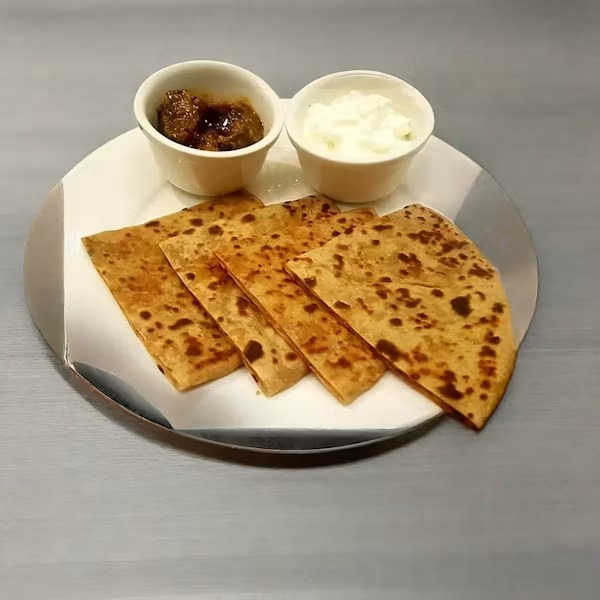

chapati
Home

Description
Chapati is a soft, round flatbread that is popular in many East African and South Asian countries. It is made from wheat flour, water, salt, and a little oil, making it a simple but delicious accompaniment to stews, vegetables, or tea.
Ingredients
- 2 cups all-purpose flour
- 1 teaspoon salt
- 2 tablespoons cooking oil
- ¾ cup warm water
- Extra flour for rolling
Steps
- Mix the flour and salt in a bowl.
- Add the oil and warm water, then knead into a smooth dough.
- Cover the dough and let it rest for 30 minutes.
- Divide the dough into equal balls and roll each into a thin circle.
- Cook each chapati on a hot pan until both sides are golden brown.
- Serve warm with your favorite stew or vegetables.